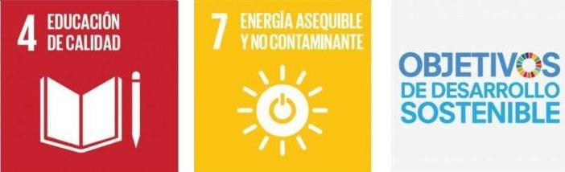
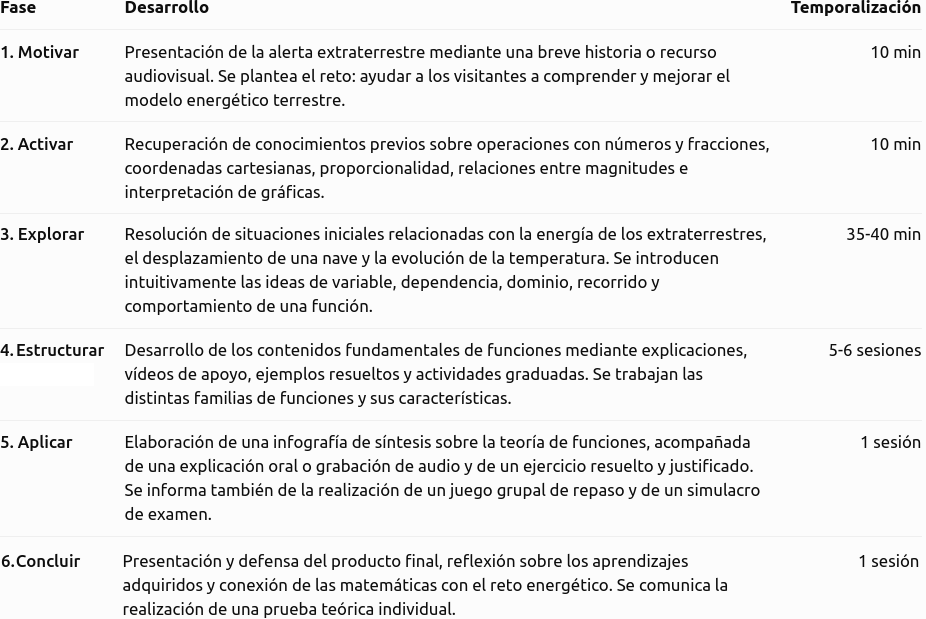

Justificación didáctica
La presente situación de aprendizaje, titulada «Las funciones no son de este mundo», pretende acercar al alumnado de 4º de ESO al estudio de las funciones matemáticas desde un contexto motivador, cercano y relacionado con algunos de los grandes desafíos de nuestra sociedad: el consumo energético, el cambio climático y la búsqueda de fuentes de energía más limpias y sostenibles.
El aprendizaje de las funciones constituye uno de los pilares fundamentales de las Matemáticas B, ya que permite describir, interpretar y analizar las relaciones entre distintas magnitudes. A través de sus diferentes representaciones —gráficas, tablas de valores y expresiones algebraicas— el alumnado aprende a interpretar fenómenos, identificar tendencias, realizar predicciones y extraer conclusiones a partir de información cuantitativa. Estas herramientas resultan esenciales no solo para continuar estudios científicos y tecnológicos, sino también para desenvolverse de manera crítica y autónoma en la sociedad actual.
Para contextualizar estos aprendizajes se plantea una narrativa de ciencia ficción en la que una alerta extraterrestre pone en marcha a los agentes de los MIB. Un grupo de visitantes de otros planetas llega a la Tierra con el propósito de compartir sus conocimientos científicos y matemáticos para ayudar a la humanidad a desarrollar un modelo energético más eficiente y sostenible. A partir de esta historia, el alumnado deberá interpretar diferentes señales, estudiar modelos matemáticos y resolver situaciones relacionadas con la producción y el consumo de energía.
La elección de este hilo conductor responde a la necesidad de presentar los contenidos matemáticos de una forma significativa, favoreciendo la curiosidad, la participación y la implicación emocional del alumnado. La narrativa permite transformar el estudio de conceptos que pueden resultar abstractos —como el dominio, el recorrido, la continuidad, la monotonía, los extremos, la simetría, la periodicidad, la función inversa o la tasa de variación media— en herramientas necesarias para resolver los problemas que plantea la misión.
La situación de aprendizaje incorpora, además, dos Objetivos de Desarrollo Sostenible de la Agenda 2030 especialmente relacionados con la propuesta:
- ODS 7. Energía asequible y no contaminante. A través de una lectura comprensiva y un posterior debate, se pretende concienciar sobre la importancia de garantizar el acceso a una energía segura, sostenible y asequible. El alumnado analizará modelos de producción y consumo energético, comparará diferentes comportamientos y reflexionará sobre la necesidad de avanzar hacia fuentes renovables y sistemas más eficientes. Las funciones matemáticas permitirán interpretar, por ejemplo, cómo evoluciona la producción solar a lo largo del día, cómo disminuye la energía almacenada en una batería o cómo varía el consumo eléctrico de una instalación.
- ODS 4. Educación de calidad. Se promueve una educación inclusiva, equitativa y de calidad que proporcione al alumnado herramientas para comprender el mundo y participar activamente en su transformación. La propuesta favorece el aprendizaje competencial, el pensamiento crítico, la resolución de problemas, la competencia matemática y la competencia digital, ofreciendo diferentes formas de acceder a la información, expresar los aprendizajes y participar en las actividades.
Ambos objetivos se relacionan directamente: una educación científica y matemática de calidad permite comprender los desafíos energéticos y tomar decisiones fundamentadas sobre el futuro del planeta.

Por otra parte, esta situación de aprendizaje conecta las matemáticas con otras áreas del conocimiento, especialmente con la Física y la Química, la Biología y Geología, la Tecnología y la Educación en Valores Cívicos y Éticos. De este modo, se favorece una visión interdisciplinar del aprendizaje y se muestra que las matemáticas no son un conjunto aislado de procedimientos, sino un lenguaje que permite interpretar fenómenos reales.
En definitiva, se pretende que el alumnado no se limite a reconocer y representar funciones, sino que comprenda su utilidad, sea capaz de interpretar información, argumentar sus conclusiones y valorar el papel de las matemáticas en la construcción de una sociedad más sostenible.
Temporización
Se propone una duración aproximada de entre 9 y 10 sesiones de 55 a 60 minutos, adaptable a las características del grupo.

La fase 4, Estructurar, concentra el mayor número de sesiones, ya que constituye el núcleo de construcción y consolidación de los aprendizajes.
La temporización podrá flexibilizarse en función del ritmo del grupo, ampliando el tiempo dedicado a aquellos contenidos que presenten mayores dificultades.
Producto final
El producto final consistirá en la elaboración de una infografía audiodescrita sobre la teoría de funciones, en la que el alumnado recogerá los principales conceptos estudiados: dominio, recorrido, continuidad, monotonía, extremos, simetría, periodicidad, función inversa, tasa de variación media y familias de funciones.
La infografía incluirá ejemplos y representaciones gráficas, y se acompañará de:
- Un resumen del contenido teórico del tema.
- Un audio explicativo, en el que el alumnado justificará la organización y selección de los contenidos, sin limitarse a leerlos.
- Un ejercicio resuelto, en el que explicará el procedimiento seguido y los resultados obtenidos.
Este producto permitirá comprobar la comprensión de los contenidos, la capacidad de síntesis y la comunicación matemática.
Rúbrica
Para evaluar el producto final puede usar la siguiente rúbrica:
| 5. Excelente | 4. Notable | 3. Adecuado | 2. Básico | 1. Insuficiente | |
|---|---|---|---|---|---|
| 1. Corrección y dominio de los contenidos matemáticos | Los contenidos son completos, rigurosos y muestran un dominio sólido y preciso. (1.0) | Los contenidos son correctos y completos, con alguna imprecisión menor. (0.75) | Recoge los contenidos fundamentales, aunque presenta algunos errores. (0.5) | Los contenidos son incompletos y presenta errores relevantes. (0.25) | Presenta importantes carencias y errores conceptuales. (0.1) |
| 2. Aplicación y razonamiento matemático | Selecciona estrategias adecuadas, las desarrolla con rigor y justifica de forma clara los procedimientos y resultados. (1.0) | Utiliza estrategias adecuadas y justifica correctamente la mayor parte de los procedimientos. (0.75) | Aplica procedimientos adecuados, aunque la justificación es limitada. (0.5) | Predomina la aplicación mecánica de procedimientos y existen dificultades de razonamiento. (0.25) | No utiliza estrategias adecuadas o no justifica los procedimientos. (0.1) |
| 3. Organización y síntesis de la información | Selecciona, relaciona y jerarquiza la información con gran capacidad de síntesis, facilitando una visión global de los contenidos. (1.0) | La información está bien seleccionada y organizada, con una síntesis adecuada. (0.75) | La información es suficiente y está razonablemente organizada. (0.5) | Incluye información poco relevante, repetitiva o insuficientemente estructurada. (0.25) | La información aparece desorganizada y dificulta la comprensión. (0.1) |
| 4. Conexión y transferencia de los aprendizajes | Relaciona diferentes contenidos matemáticos y los aplica de forma flexible a situaciones nuevas, estableciendo conexiones relevantes. (1.0) | Establece conexiones entre contenidos y los aplica adecuadamente a situaciones contextualizadas. (0.75) | Relaciona algunos contenidos y aplica procedimientos conocidos en situaciones similares a las trabajadas. (0.5) | Tiene dificultades para relacionar contenidos o transferir los procedimientos a situaciones diferentes. (0.25) | No establece conexiones significativas ni consigue aplicar los aprendizajes a nuevas situaciones. (0.1) |
| 5. Comunicación matemática en la infografía | Utiliza con precisión el lenguaje, la simbología y las representaciones matemáticas; las explicaciones son rigurosas y claras. (1.0) | Utiliza adecuadamente el lenguaje y la notación matemática, con pequeñas imprecisiones. (0.75) | La comunicación matemática es comprensible, aunque presenta algunos errores o imprecisiones. (0.5) | Presenta errores frecuentes de notación, lenguaje o representación. (0.25) | La comunicación matemática resulta confusa o incorrecta. (0.1) |
| 6. Diseño, legibilidad y recursos visuales | La estructura visual, distribución, tipografía, imágenes y recursos gráficos están plenamente al servicio de la comprensión matemática. (1.0) | El diseño es claro, equilibrado y facilita la comprensión. (0.75) | El diseño es funcional, aunque presenta algunos aspectos mejorables. (0.5) | La organización visual dificulta parcialmente la lectura o comprensión. (0.25) | El diseño dificulta significativamente el acceso a la información. (0.1) |
| 7. Audiodescripción: claridad y precisión | La audiodescripción permite reconstruir con precisión la estructura, elementos visuales y contenidos matemáticos de la infografía sin necesidad de verla. (1.0) | Describe adecuadamente los elementos esenciales y los contenidos principales. (0.75) | Permite comprender la información fundamental, aunque omite algunos aspectos relevantes. (0.5) | La descripción es incompleta o poco estructurada. (0.25) | No permite comprender adecuadamente el contenido de la infografía. (0.1) |
| 8. Expresión oral y adecuación del audio | Discurso fluido, estructurado y preciso, con vocabulario matemático adecuado y excelente control del ritmo, volumen y entonación. (1.0) | Expresión clara y adecuada, con pequeñas dificultades de fluidez. (0.75) | El discurso es comprensible, aunque presenta algunas dificultades expresivas. (0.5) | Las dificultades de expresión afectan parcialmente a la comprensión. (0.25) | La comunicación oral resulta difícil de seguir. (0.1) |
| 9. Disposición ante la tarea y compromiso con el aprendizaje | Se implica de forma constante, afronta la tarea con iniciativa y muestra una disposición constructiva incluso ante las dificultades. (1.0) | Mantiene una implicación constante y una actitud favorable durante el desarrollo de la tarea. (0.75) | Realiza la tarea adecuadamente, aunque su implicación es irregular en algunos momentos. (0.5) | Muestra escasa iniciativa o implicación y necesita estímulos frecuentes para avanzar. (0.25) | Presenta una actitud poco favorable hacia la tarea y apenas se implica en su desarrollo. (0.1) |
| 10. Flexibilidad cognitiva y curiosidad matemática | Explora alternativas, formula preguntas, establece conexiones inesperadas y modifica sus estrategias cuando la situación lo requiere. (1.0) | Considera diferentes posibilidades y muestra interés por comprender y explorar más allá del procedimiento inmediato. (0.75) | Acepta alternativas y muestra curiosidad ante algunas situaciones, aunque tiende a utilizar estrategias conocidas. (0.5) | Se muestra poco flexible ante procedimientos diferentes y tiene dificultades para explorar alternativas. (0.25) | Se aferra a un único procedimiento y muestra escaso interés por explorar o comprender otras posibilidades. (0.1) |
- Actividad
- Nombre
- Fecha
- Puntuación
- Notas
- Reiniciar
- Imprimir
- Aplicar
- Ventana nueva
Metodología
Se empleará una metodología activa, participativa y contextualizada, basada en el aprendizaje a través de retos. La narrativa extraterrestre servirá como hilo conductor para dar sentido a los contenidos y relacionarlos con situaciones reales vinculadas a la energía y la sostenibilidad.
Se combinarán las siguientes estrategias:
- Aprendizaje significativo: conexión de los nuevos contenidos con los conocimientos previos y situaciones cotidianas.
- Resolución de problemas: actividades contextualizadas que requieren interpretar, representar y analizar funciones.
- Instrucción guiada: explicaciones del docente, ejemplos resueltos y actividades progresivas.
- Recursos audiovisuales y digitales: vídeos de YouTube del marco teórico y herramientas como GeoGebra para visualizar y estudiar funciones.
- Metacognición: reflexión sobre los aprendizajes mediante la elaboración y explicación del producto final.
La evaluación será continua y formativa, proporcionando retroalimentación durante todo el proceso.
Principios DUA aplicados
La situación de aprendizaje incorpora los principios del Diseño Universal para el Aprendizaje (DUA), ofreciendo distintas formas de acceder a los contenidos, participar y demostrar lo aprendido.
- Múltiples formas de implicación (por qué aprender): narrativa de ciencia ficción, reto motivador, conexión con problemas medioambientales y actividades variadas que fomentan la participación.
- Múltiples formas de representación (qué aprender): explicaciones escritas, vídeos de YouTube, ejemplos resueltos, tablas, gráficas, expresiones algebraicas y herramientas visuales como GeoGebra.
- Múltiples formas de acción y expresión (cómo aprender): resolución de ejercicios, trabajo individual y cooperativo, elaboración de una infografía, grabación de un audio y explicación de procedimientos matemáticos.
Estas medidas buscan facilitar la participación de todo el alumnado, respetando sus diferentes ritmos y necesidades y ofreciendo diversas vías para alcanzar los objetivos de aprendizaje.